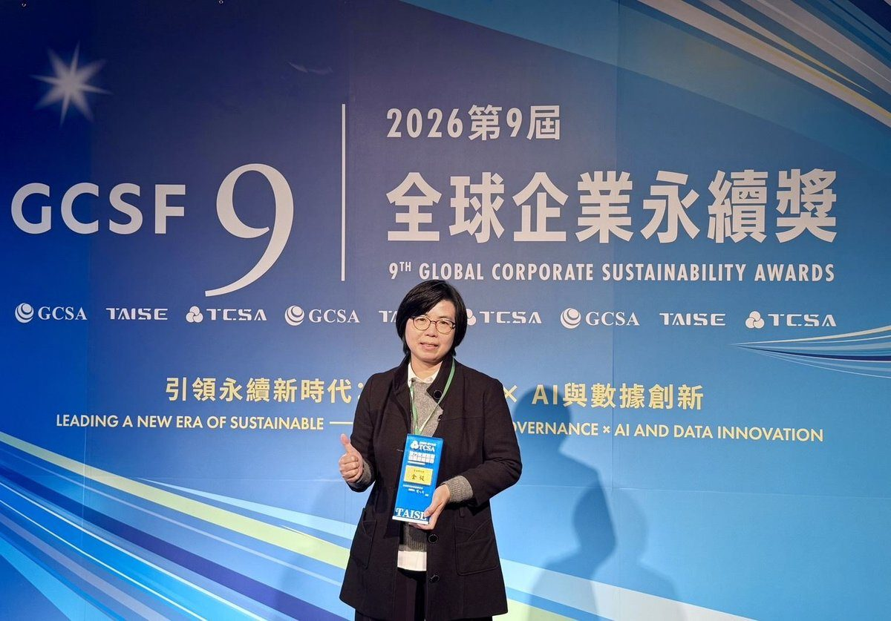

花蓮VLR奪金級獎 永續治理韌性重生獲肯定

可樂電子報小編/編輯
臺灣永續能源研究基金會11月25日在臺北圓山大飯店舉行「2026第十九屆台灣企業永續獎」頒獎典禮，花蓮縣政府以《2025花蓮VLR》榮獲「政府機關自願檢視報告—金級獎」，由行政暨研考處處長黃淑梅代表受獎。這份報告記錄花蓮從0403強震走向韌性重生的治理軌跡，黃淑梅表示，它是獻給臺灣、獻給未來的報告書。
縣府指出，《2025花蓮VLR》以「韌性、共好、未來」為三大亮點。「韌性」是面對天災的即時應變與復原能力，呈現政府與民間攜手推動永續的成果；「共好」涵蓋全國第一的有機農業面積、低碳旅宿，以及全臺首支資訊化災難醫療隊（iDMAT），讓永續與產業、醫療照護同步前進，也讓在地特色被更多人看見。

「未來」則持續強化防災治理、推動大健康照護，並透過永續旅遊與國際連結，打造安居樂業、接軌國際的幸福城市。縣府表示，報告書透過文字及影像記錄，完整呈現花蓮邁向永續城市的決心，也把累積多年的治理經驗系統化整理，作為下一階段政策調整與城市發展的基礎。
花蓮以「2050淨零 × 森川里海 × 幸福城市」為願景，推動有機農業、環境守護與減廢生活；2024年0403強震後，從第一線救災、導入全災型智慧防災系統（EDP），到社區互助與產業振興，一步步累積出「韌性重生」的地方經驗，也讓防災整備與日常治理結合得更緊密，成為縣府持續精進的養分。

縣長徐榛蔚表示，花蓮立足山海之間，土地面積佔全臺12.7%、森林覆蓋率80.54%、海岸線長達119公里，縣府團隊從環境永續兼顧科技應變與生態守護，並深耕多元族群文化平權，長照據點涵蓋率高，有機農業耕作面積與農戶數都是全國第一，展現地方治理的在地解方與長期累積的成果。
徐榛蔚說，未來會持續落實聯合國永續發展目標（SDGs），掌握轉型契機，讓永續不只是施政願景，更成為花蓮人的日常，以及迎向世界的自信座標。縣府也會把這次獲獎的經驗轉化為具體行動，持續回應鄉親對生活環境、產業發展與世代照顧的期待，讓永續在城市每個角落發生。
🌟 掌握花蓮在地第一手資訊・歡迎訂閱追蹤
深度紀實報導、在地精采影音專題，第一時間接收最新消息！